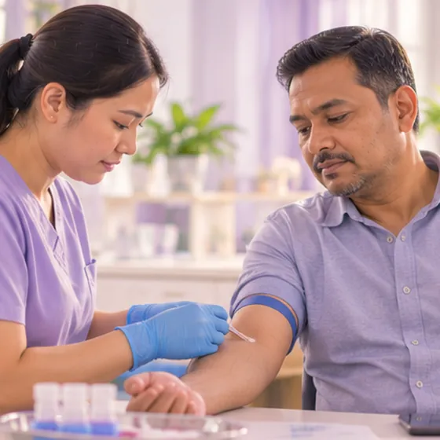

Homosisteina tinggi (hiperhomosisteinemia)
Paras homosisteina, sejenis bahan dalam darah, yang lebih tinggi daripada biasa pada ujian darah
Apa itu
Homosisteina ialah bahan semula jadi yang dihasilkan oleh badan. Paras tinggi pada ujian darah mungkin berkait dengan risiko masalah salur darah yang lebih tinggi, jadi doktor akan menyiasatnya.
- Dalam darah
- Dikesan pada ujian darah
- Biasanya tiada tanda
- Jumpa doktor
- Doktor keluarga; pakar jantung atau pakar darah jika perlu
- Biasa pada
- Orang dewasa; lebih mudah jika kurang vitamin, masalah buah pinggang atau merokok
- Berjangkit
- Tidak
- Perjalanan
- Bergantung pada puncanya; doktor boleh menyemak semula paras dari semasa ke semasa
Tanda biasa

Dikesan dalam ujian darahPenemuan makmal 
Letih sepanjang masaKeletihan
Tanda-tanda lain
- Tanda darah beku atau salur darah menyempit pada sesetengah orang
- Selalunya dikesan semasa memeriksa seseorang yang berisiko penyakit jantung
Mengapa ia berlaku

MerokokPenggunaan tembakau 
Kesan sampingan sesetengah ubatKesan buruk ubat
Punca lain
- Kekurangan folat (asid folik), vitamin B12 atau vitamin B6 dalam makanan
- Masalah buah pinggang atau tiroid kurang aktif
Jumpa doktor dahulu jika
- Sakit dada atau sukar bernafas secara tiba-tiba: hubungi 999
- Muka senget, lengan lemah atau sukar bercakap: hubungi 999
- Satu kaki tiba-tiba bengkak, merah, panas atau sakit: ke hospital segera
- Kebas, rasa kesemutan atau lemah yang makin teruk
- Anda mengandung dan diberitahu paras anda tinggi
Jika mana-mana berkenaan, sila jumpa doktor sebelum sesi.
Halaman ini ialah maklumat am. Sila terus mengambil ubat biasa anda dan terus berjumpa doktor.
Teruskan mengambil ubat biasa anda dan terus berjumpa doktor. Sesi kami ialah sokongan lembut dan tidak menggantikan rawatan perubatan.
Menjaga diri

Makan makanan seimbangDiet seimbang 
Berhenti merokokBerhenti merokok 
Periksa tekanan darah di rumahPemantauan tekanan darah di rumah
Lebih banyak cara menjaga diri
- Tanya doktor sebelum mengambil sebarang pil vitamin
- Pergi semula untuk ujian darah susulan yang diminta doktor
Beritahu ahli terapi anda
- Darah beku atau kaki bengkak yang baru
- Ubat pencair darah
- Penyakit jantung
- Penyakit buah pinggang atau hati
- Kehamilan
Ahli terapi anda akan menyemaknya bersama anda sebelum bermula.
Soalan dan jawapan
Apakah Homosisteina tinggi (hiperhomosisteinemia)?
Paras homosisteina, sejenis bahan dalam darah, yang lebih tinggi daripada biasa pada ujian darah. Homosisteina ialah bahan semula jadi yang dihasilkan oleh badan. Paras tinggi pada ujian darah mungkin berkait dengan risiko masalah salur darah yang lebih tinggi, jadi doktor akan menyiasatnya.
Apakah tanda biasa Homosisteina tinggi (hiperhomosisteinemia)?
Dikesan dalam ujian darah · Letih sepanjang masa
Mengapa Homosisteina tinggi (hiperhomosisteinemia) berlaku?
Merokok · Kesan sampingan sesetengah ubat
Bagaimana menjaga diri dengan Homosisteina tinggi (hiperhomosisteinemia)?
Makan makanan seimbang · Berhenti merokok · Periksa tekanan darah di rumah
Bolehkah sesi AI Body Master membantu Homosisteina tinggi (hiperhomosisteinemia)?
Sesi ialah sokongan meridian tanpa jarum yang lembut untuk kesejahteraan anda. Ia tidak merawat atau menyembuhkan Homosisteina tinggi (hiperhomosisteinemia) dan tidak menggantikan ubat atau doktor anda. Beritahu ahli terapi anda sebelum sesi bermula.
Keadaan berkaitan
- Angina varian (angina Prinzmetal)
- Miokarditis virus (radang otot jantung)
- Sindrom sinus sakit
- Blok berkas cabang kanan tidak lengkap
- Angina tidak stabil
- Urat varikos pada kaki (vena safena besar)
- Tekanan darah rendah
- Fistula arteriovenus (fistula AV)
- Vaskulitis berkaitan ANCA
- Sel darah putih rendah
- Leukemia
- Jangkitan oleh virus
Rujukan: General information based on public health sources such as Mayo Clinic, NHS, Cleveland Clinic and NCBI StatPearls.
Halaman dikemas kini: 2026-11-09